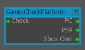
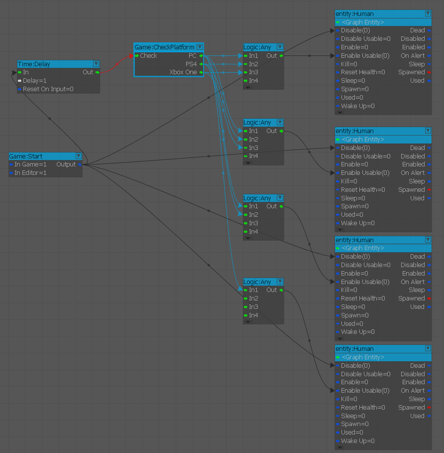
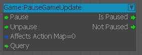

CheckPlatform
Используйте этот узел для изменения игровых событий в зависимости от того, на какой платформе вы запускаете игру.

Входы
| Порт | Тип | Описание |
|---|---|---|
| Проверить | Любой | Запускает проверку текущей платформы |
Выходы
| Порт | Тип | Описание |
|---|---|---|
| PC | Любой | Срабатывает, если платформа — PC. |
| PS4 | Любой | Срабатывает, если платформа PS4. |
| XboxOne | Любой | Срабатывает, если платформа — XboxOne. |

В приведенном выше примере мы настроили скрипт, который проверяет, на какой платформе запущена игра, а затем включает соответствующие объекты.
Таким образом, PC включит все четыре объекта, Xbox360 включит первые три, а затем PS3 включит первые два объекта.
ForceFeedback
FlowNode для воспроизведения/остановки эффектов силовой обратной связи.
ForceFeedbackTweaker
FlowNode для управления индивидуальным высокочастотным и низкочастотным эффектом обратной связи.
GetEntityState
Получить текущее состояние объекта.
GetGameRulesEntityId
Вызывает функцию скрипта для сущности.
GetSupportedGameRulesForMap
Получите поддерживаемые правила игры для карты.
IsLevelOfType
Проверьте, принадлежит ли уровень заданному типу.
ObjectEvent
Транслируйте событие игрового объекта или отправьте его определенному объекту. EventParam — это строка, специфичная для события.
PauseGameUpdate
Этот узел позволяет приостанавливать/возобновлять обновление игры и запрашивать его состояние.

USE THIS NODE IN UI FLOWGRAPH (например, UI_ACTIONS) NOT IN GAME FLOWGRAPH.
Старт
Срабатывает в начале игры, используется для запуска блок-графов в начале уровня.
Устаревшие узлы
- Игра:ActorCheckHealth (теперь Actor:HealthCheck)
- Игра:ActorGetHealth (теперь Actor:HealthGet)
- Игра:ActorSensor (теперь Actor:Sensor)
- Игра:ActorSetHealth (теперь Actor:HealthSet)
- Игра:DamageActor (теперь Actor:Damage)
- Игра:DisplayTag (теперь отладка:DisplayTag)
- Игра:DisplayTagAdv (теперь отладка:DisplayTagAdv)
- Игра:LocalPlayer (теперь Actor:LocalPlayer)
- Игра:PlayerLink (теперь Actor:PlayerLink)
- Игра:SetVehicleAltitudeLimit (устарело, используйте CVar v_altitudeLimit)
Игра:DifficultyLevel
Игра:EventListener
Игра:FireSystemEvent
Игра:ForceFeedbackTriggerTweaker
Игра:GiveAchievement
Игра:IsDemo
Игра:IsZoomToggling
Игра:MP:SetEquipmentLoadout
Игра:RoundTrigger
Игра:SaveGame
Игра:SetPostEffectParam
Игра:TutorialPlayerSP
Игра:WeaponSensor